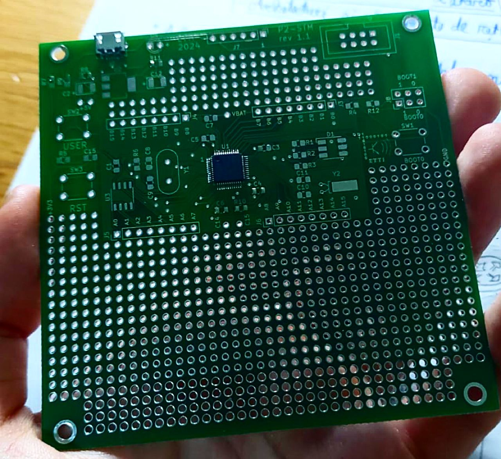
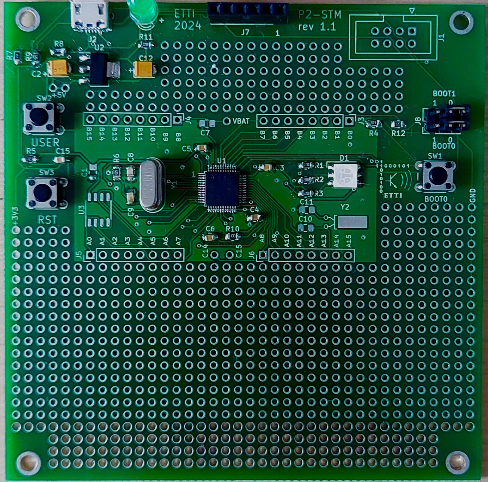
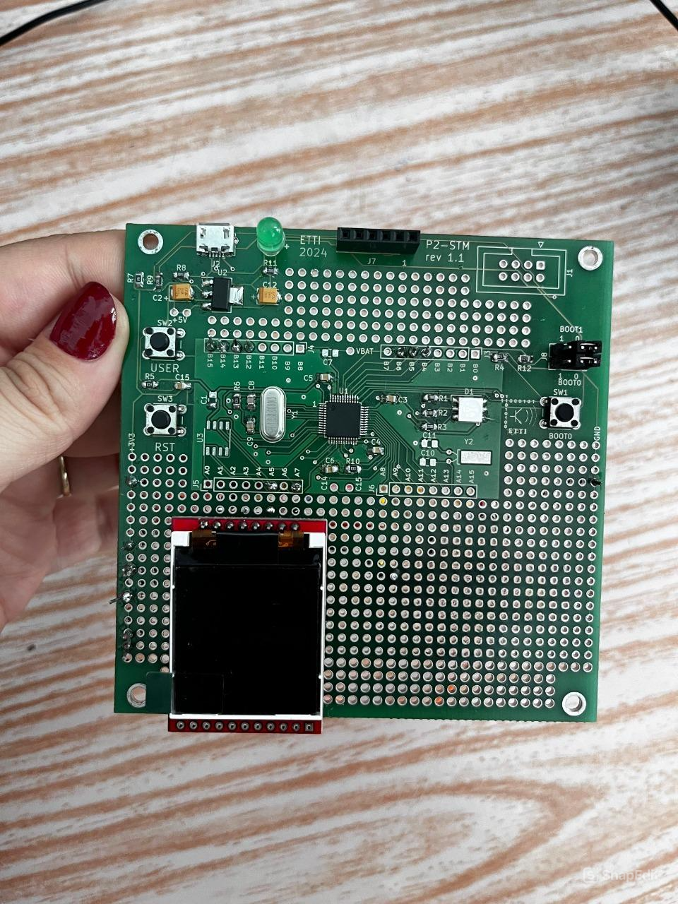
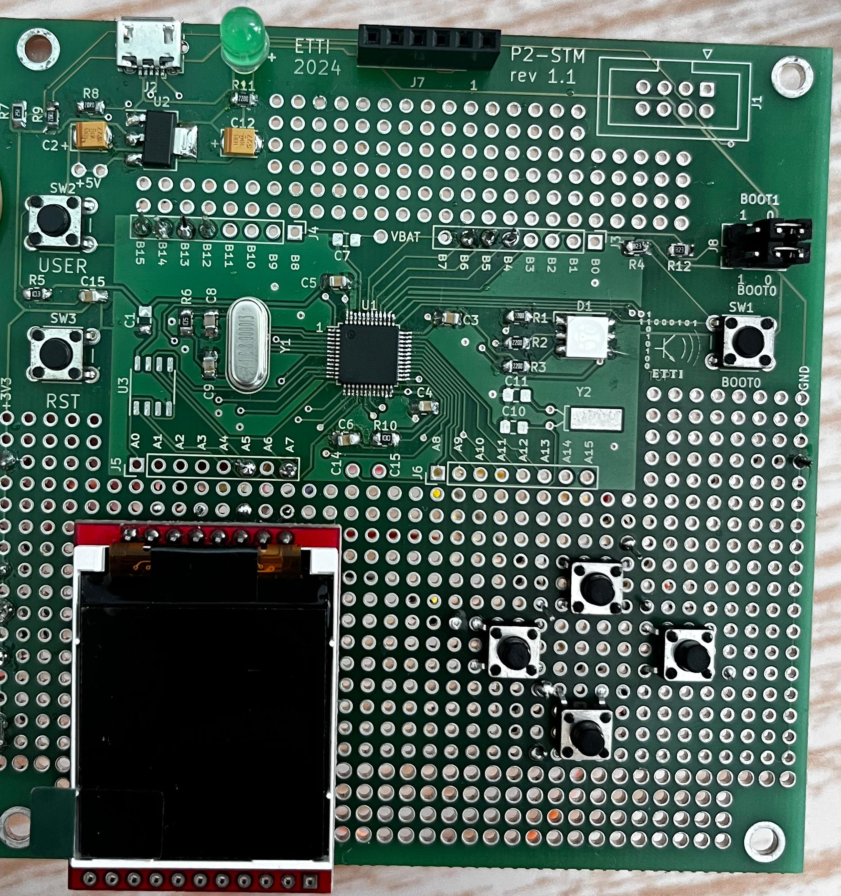
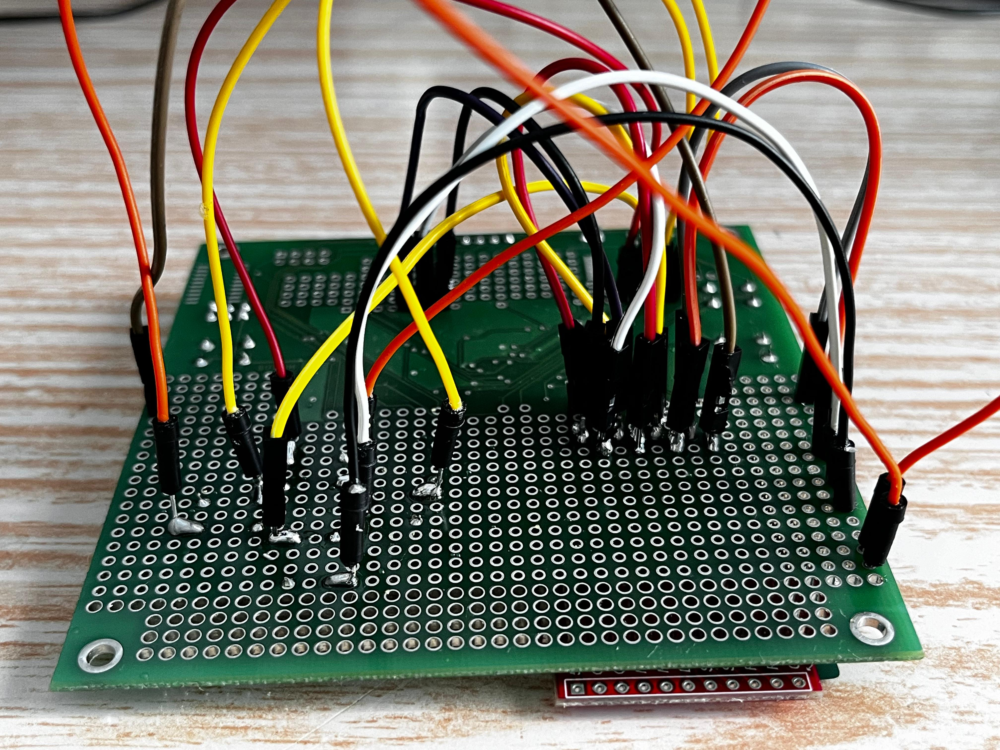
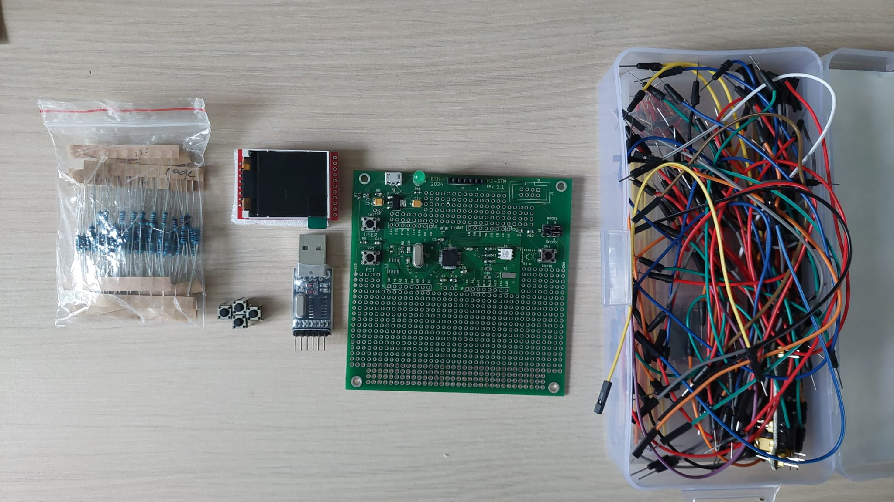
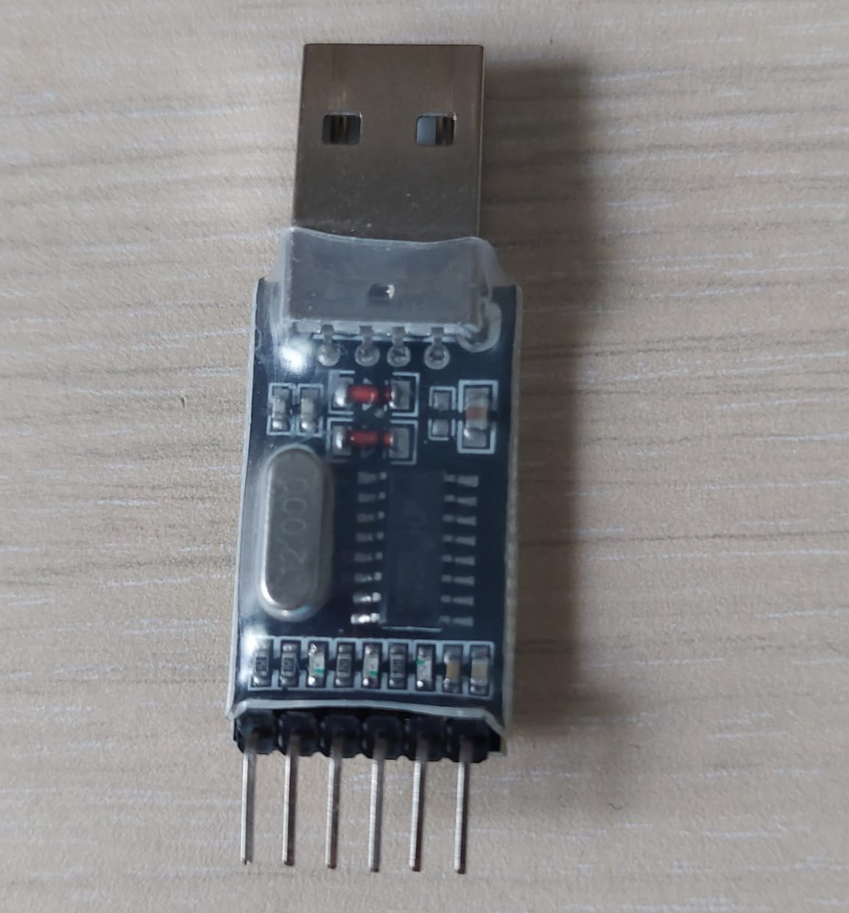
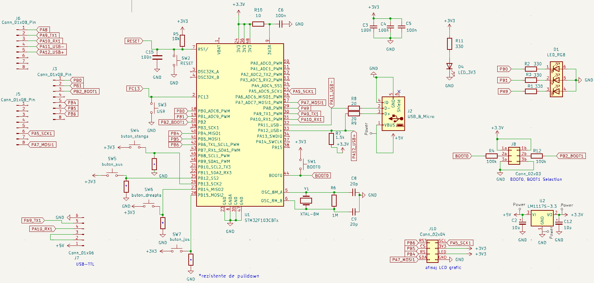

Inițial, portul USB și microcontroller-ul au fost lipite pe placă cu ajutorul mecanismului Pick and Place, apoi introduse în cuptorul pentru lipit, după o verificare atentă la microscop (s-a verificat dacă aliajul a fost pus corect pe pad-uri, apoi dacă pinii componentelor au fost corespunzător așezați pe pad).

Ulterior, componentele comune tuturor echipelor au fost lipite pe placă manual, folosind stația de lipit din laborator.

Am început pregătirea machetei finale prin lipirea ecranului pe placă, conexiunile către pinii necesari realizându-se pe spatele plăcii cu ajutorul firelor. Ulterior, am lipit și cele 4 butoane (așezarea lor fiind intuitivă direcțiilor pentru joc); conexiunea unui buton s-a creat pe diagonală între doi pini ai acestuia.


Pentru a putea realiza conexiunile între terminalele perifericelor și pinii microcontroller-ului, am lipit fiecare terminal la un fir tată-tată, urmând ca mai apoi să facem la fel și pentru pinii microcontroller-ului.

OBSERVAȚIE: Chiar dacă pinii ecranului induc gândul unei conexiuni de tip I2C, de fapt ecranul folosește un protocol SPI. SDA (serial data) este de fapt analogul pinului MOSI (master out slave in) și, deoarece ecranul doar recepționează datele, nu este nevoie de un pin MISO, existând un pin special pentru separarea comenzilor primite (dintre cele de setare a ecranului și de afișare).

Placa și componentele adiționale achiziționate
Pentru programarea folosind bootloader-ul și comunicația cu placa, am achiziționat un convertor USB-TTL pe care l-am conectat astfel: pinul 1 al J7 de pe placă la pinul "5V" al adaptorului.


| CANTITATE | REFERINȚĂ | VALOARE | CAPSULĂ | OBSERVAȚII | FURNIZOR | PREȚ UNITAR (lei) |
|---|---|---|---|---|---|---|
| 4 | R1,R2,R3,R11 | 330 Ω | smd0805 | - | UPB | - |
| 2 | R8,R9 | 20 Ω | smd0805 | - | UPB | - |
| 2 | R4,R12 | 100kΩ | smd0805 | - | UPB | - |
| 1 | R6 | 1MΩ | smd0805 | - | UPB | - |
| 1 | R7 | 1.5kΩ | smd0805 | - | UPB | - |
| 1 | R10 | 10Ω | smd0805 | - | UPB | - |
| 1 | R5 | 10kΩ | smd0805 | - | UPB | - |
| 5 | C3,C4,C5,C6,C15 | 100nF/50V | smd1206 | - | UPB | - |
| 2 | C8,C9 | 20pF/50V | smd0805 | - | UPB | - |
| 2 | C2,C12 | 10uF | smd3528 | - | UPB | - |
| 1 | D4 | LED VERDE | smd0805 | - | UPB | - |
| 1 | D1 | LED RGB | smd5050-6 | - | UPB | - |
| 3 | SW1,SW2,SW3 | buton | tht SW_push_6mm_H7.3mm | - | UPB | - |
| 1 | J8 | CON6 | tht 02x03 | jumper 6 pini | UPB | - |
| 1 | U1 | STM32F103CBTx | LQFP-48_7x7mm_P0.5mm | - | UPB | - |
| 1 | Y1 | Oscilator cu cuarț | crystal-HC18-U vertical | - | UPB | - |
| 1 | U2 | 3.3V | SOT223 | stabilizator de tensiune | UPB | - |
| 1 | J7 | CON6 | tht 01x06 | jumper 6 pini | UPB | - |
| 1 | J2 | usb micro (tip B) | smd0.65mm x 1.15mm | port usb micro | UPB | - |
| 4 | SW4,SW5,SW6,SW7 | buton | tht SW_push_6mm_H7.3mm | - | Optimus Digital | 0.36 |
| 1 | J10 | afișaj LCD grafic TFT | tht 1.44’’ | graphic 128xRGBx128 | Optimus Digital | 42.99 |